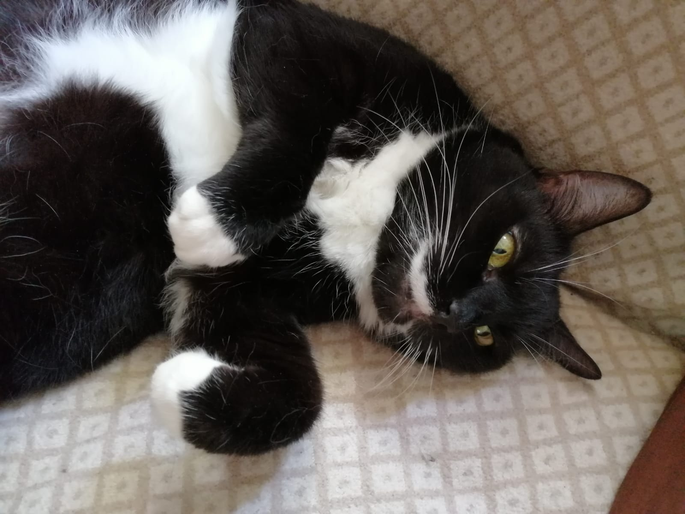
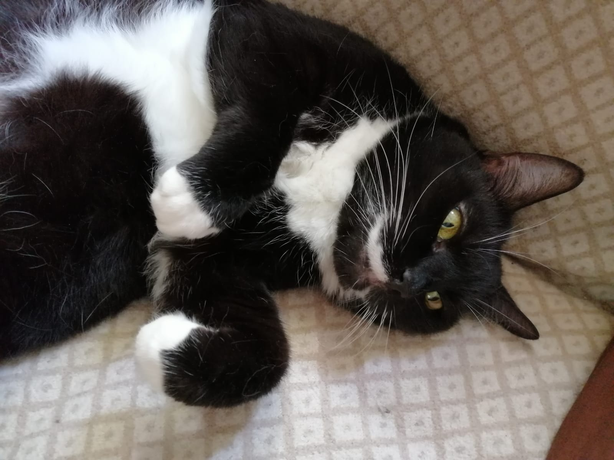

What was at the beginning
In April 2022 my friend sent me a cute photo of two cats, asking, if I could help out. It was about taking care of the cats for two months, until their Ukrainian family settles in the new home, after leaving Ukraine.
We said yes and few days after the cat owners flew to United states. Young parents with small boy.
Where are we today
Oh, did I say two cats? It was three, I just didn´t notice that on the picture, which was sent to me at he beginning. And who would have three cats anyways?
Two promised months passed very fast, we were enjoying having three animals in rather small flat. If they were mine, I would let them run in the courtyard, but owners asked us not to do so.
I must say they are very well behaved cats, they never demaged something, they love to chop cartboards, but it is easy to give them one after each package we recieve.
I must say, that after three months I was ready to give them back. But. The cat family is not ready yet, after one year and three months. They went throgh hard time abroad, live in uncertanity, don ´t speak english, don´t have proper jobs and mainly it is hard to find a home, where they can have animals.
And where we want to go
The sutuation at the moment is very unclear, the owner really misses the cats, very beautiful, how she is axpressing her love to them in each message. I am trying to send the photos from time to time, we take good care of them, but again, they belong to them.
The curriere service for three cats flying over Atlantic costs around 2000 dollars, which we are saving together and hoping that soon the cat story will end. Happily.
 
